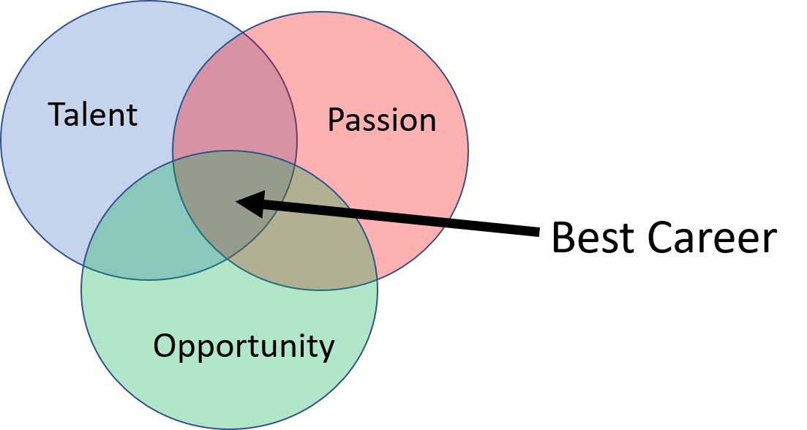
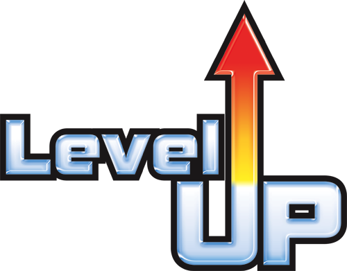

Preparing For Your Career Roadtrip

“If you don’t know where you are going, you might wind up someplace else” –Yogi Berra
Why Should You Have A Career Development Plan?
What defines a successful career for you?
Does everybody need a formal plan in order to be successful? No. There’s such a thing as luck too. But I bet most people already have a plan in some variant or another. For example have you ever written career related objectives on a TODO list or in your New Years resolutions?
Having a plan serves to remind you of the bigger goals that you want (or think you want) out of life so that you continue to work towards them one day at a time. The risk of not having a plan is looking back years later and realizing you got way off track and now feel the pull of midlife crisis bearing down on you. Panic creeps in and you might start wondering where it all went wrong, what the meaning of life is and how to get things back on track.
Are plans bulletproof? No. But they’ll help keep you progressing on a path that is meaningful, fulfilling and brings you joy and happiness. Why not create your own luck?
“Luck is when preparation meets opportunity” –Seneca
OK, but why should you take any advice from me? After all, I’m not a CEO, motivational speaker nor written a best selling book. Great point (and maybe none of those things YET :-)! Well to be honest, I didn’t use this process until recently to help me through a difficult time in my career. So I wrote this in hopes of helping others get to to where they want to go quicker than I did or help get out of a place of feeling stuck.
What Is A Career Development Plan?
A development plan has two major components: The process and the plan itself.
The Process
The process serves to break down large goals (ex: end of career/retirement or end of life) into smaller/short-term milestones along with actional steps you can take on a daily/weekly/monthly basis.
I know sometimes taking small steps doesn’t feel like big progress, but as somebody else said much better:
The Plan
The plan is just a list of goals and actions.
The format of the list can be whatever works for you. It can be formally documented or as informal as a whiteboard or sticky notes. The point is to make it work for you.
Tools For The Journey
This tutorial will help you build your own unique compass, landscape and map, and help define your starting point, destination and route.
Build Your Compass: Know Thyself
“Knowing yourself is the beginning of all wisdom” –Aristotle
Your journey should be guided by your values.
If you’re having a difficult time coming up with what your values are, then you’re not alone. Yes, it’s hard and you’ll keep thinking about it and updating them until you feel “just right” about them. Some helpful tips to get started:
- What experiences fulfill you, bring you joy and happiness?
- Who your role models are and why? What is it about them that you admire and seek to find in yourself?
Understand The Landscape

The landscape defines oundaries of where you go. The TOP model is popular and can easily be Googled to get more details. TOP stands for: Talent, Opportunity and Passion. The concept is that when the 3 intersect, this is where you can have your best career.
Take a moment to think about your talents (i.e. strenghs) and passions (things you have an affinity to do and would probably even do them for free). If you’re having trouble knowing your talents, it may help to get feedback from your manager, mentor, colleagues or friends.
The opportunites available are probably going to be bound by the company you work for and the particular team you’re in. Talk to your manager or think about how to Job Craft your role in a way that can best overlap with your talents and passions.
Don’t forget that the landscape is not static! Adopt a growth mindset, to know that anything is possible.
Map Orientation
The Map is also going to be shaped by your company and the particular team you’re in. This defines the path to upward mobility and should define required expectations.

For example a company may have grade levels (ex: Engineer grade level I, II, III) or may simply use titles like "junior", "senior", "lead", "fellow", etc. Each typically come with financial and/or prestige related incentives and will likely be how you end up defining progress.Having a discussion with your manager, mentor or colleagues may be helpful to make sure you understand what it actually takes to move around.
Choose Your Destination
It’s Choose You’re Own Adventure time. How far you want to go on the map? :-)
Start with a long-term goal which may be a goal 10+ years down the line, when you retire, or even what you want before you die. Be aspirational (i.e. the goal might feel impossible right now) but remember to connect your goals to your values. Do they align? Why do you want this particular goal? Note that not every goal is achieved through leveling up or being promoted.
Now break the larger goals into smaller goals until you identify something that is achievable in the next 1-4 years.
example:
- Life Goal: Become the best version of myself so that I can inspire others to be the best version of themselves
- Career Goal: Promotion every 3-5 years and/or I successfully inspire others.
- Next Destination: Promotion within 2 years
Starting Point
Your strengths define your starting point. Locate them on the map, i.e. which grade level or title are you performing to? I suggest you have a meaningful conversation with your manager to ensure you are on the same page because they will be your gatekeeper to upwards mobility in your company.
Plan Your Route
Now that you have a destination in mind and know where you’re starting from, it’s time to plan the route and waypoints. Think of the waypoints as micro-goals (or stepping stones) along your way to achieving your goals. It’s best if they are specific, timebound and measureable. What do you want, by when, as measured by what? Without those details, it becomes too easy to let yourself off the hook. For example, of you want to become an an expert in python coding, what does it mean to be an expert? Instead, define expert as for example, passing a particular skills test (like LinkedIn skills tests).
example:
- Next Destination: Promoted in next 2 years
- Waypoint 1:Become an expert at programming in python by the end of the year, as measured by passing the Linked-In skills test
- Waypoint 2: Become a confident presenter
Take Action
Break the waypoints into small, actionable steps. Again suppose so you want to be an expert python coder. How does one achieve that? Brainstorm a list of options such as taking a class or reading a book. Prioritize the list then go find that specific class or book, schedule some time in whatever calendar runs your life and go do it!
example:
- Next Destination: Promoted in next 2 years
- Waypoint 1:Become an expert at programming in python by the end of the year, as measured by passing the Linked-In skills test
- Action 1: Schedule 2 hours per week on my calendar to find a class and complete all the exercises
- Waypoint 2: Become a confident presenter
- Action 2: Schedule an hour a week to attend my local Toastermaster’s club meeting
- Waypoint 1:Become an expert at programming in python by the end of the year, as measured by passing the Linked-In skills test
A Note About Progress
Progress is not always a straight line. Many people will tell you that the path was winding. The point is to keep moving and beware of stagnation.
“Without deviation from the norm, progress is not possible” –Frank Zappa
Sometimes by simply following your compass (doing things that bring your fulfillment, joy and happiness), eventually your path reveals itself.
"You can't connect the dots looking forward; you can only connect them looking backwards. So you have to trust that the dots will somehow connect in your future" --Steve Jobs
Where To Next?
Congratulations! If you’ve gotten this far, then you have a good start on your development plan journey. But it doesn’t end here, nor does it stop once you reach a destination.
Use your goals, talents, passions and opportunities to have meaningful career development conversations with your manager or mentor. It’s important that others who are in positions to help you know what you want. Say it, then repeat it, make sure you’re heard :-)
Remember that your plan is not a contract. It’s OK if you don’t do everything on the list or don’t execute them exactly as planned.
This process should be repeated regularly because your personal values and goals will change over time, not to mention the landscape and map may as well. (My personal method leverages new years as an annual checkpoint to write down my bigger aspirations in a binder as well as record unexpected achievements that occurred during the year. Then my quarterly work related review sessions with my manager serve to remind me to double check the plan against my current situation)
Final Words
In order to be truly successful, try not to be guided by somebody else’s verson of success. Find yourself first.
- Know Yourself
- Know your map and landscape
- Plan and act using your internal compass
- Reflect regularly
- Let you goals be known. Share with people who can help you get to where you want to go
- Commit. Schedule time and take actions
Attribution
Images: